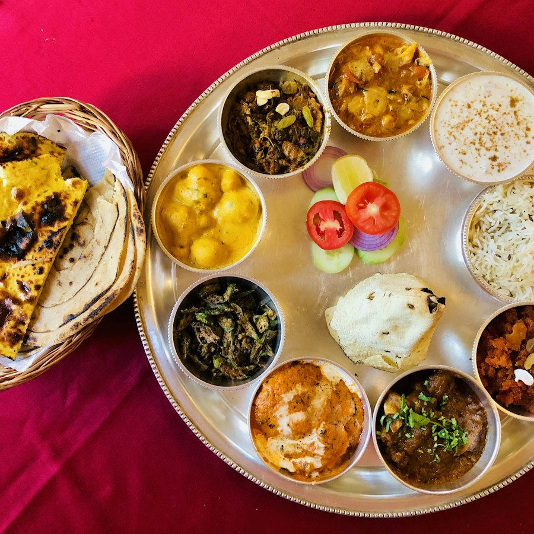

Your plan sets four targets for the day: protein, carbs, fats and fibre. Sufficiency is how much of each one you actually met. It is not a grade for eating clean and it is not a penalty for eating more. It is one question asked four times: did your body get what it was asked to take in?
Calories measure the fuel. Sufficiency measures what the fuel was made of. Two days can land on the same calorie number and look nothing alike once you split them into the four targets. One day might be mostly rice and oil. The other might carry the same energy with dal, curd and a bowl of vegetables behind it. Your body notices that difference even when the calorie count does not.
This is also why the score often stays flat when you simply eat less. Skipping a snack brings the calories down, but it usually brings protein and fibre down with them, so the gaps you were trying to close get a little wider instead.
Each target is asking for something specific, and your plan sets them together so they hold each other up.
In most kitchens protein is a side character. It arrives as a small bowl of dal beside a lot of rice, or as curd at the very end of the meal. The carbs are already generous, so the calories add up long before the protein does, and the day finishes with the fuel met and the material short.
The fix is rarely a new food. It is usually a bigger share of one you already cook: a second ladle of dal, curd at lunch and not only at dinner, paneer or egg in the evening snack, roasted chana with your tea instead of biscuits.
Move one meal at a time. A single change you keep beats four you drop by Thursday, and the meal you fix first should be the one you eat the same way every day.
The number is how close you came across all four targets together. A day at 54 is not half a bad day. It is a day where two targets landed and two did not, and the two that did not are named right under the score.
Open the macro row and find the target sitting furthest from its line. That is the only one worth acting on today. The others tend to follow it, because the meal that fixes protein usually brings fibre along with it.
Your coach is reading the same four numbers you are. When one of them runs short for several days together, that is what the next change to your plan is built on. So the most useful thing you can do is keep logging, even on the days it is not going well.
Clinically reviewed . Science backed guidance